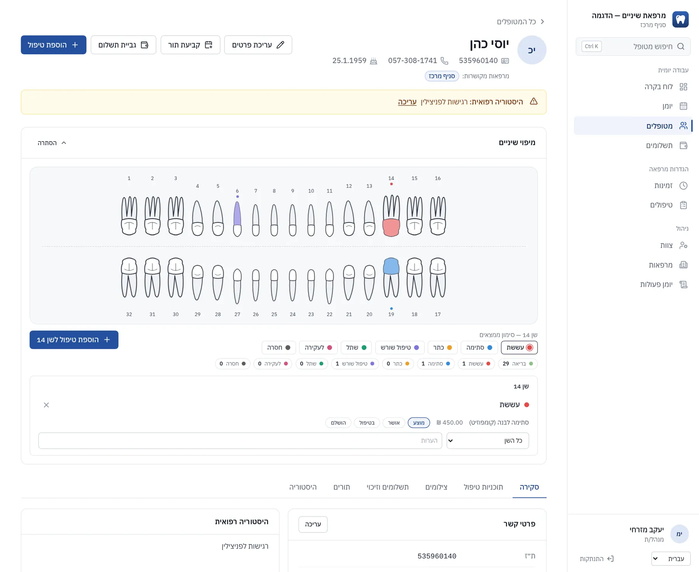
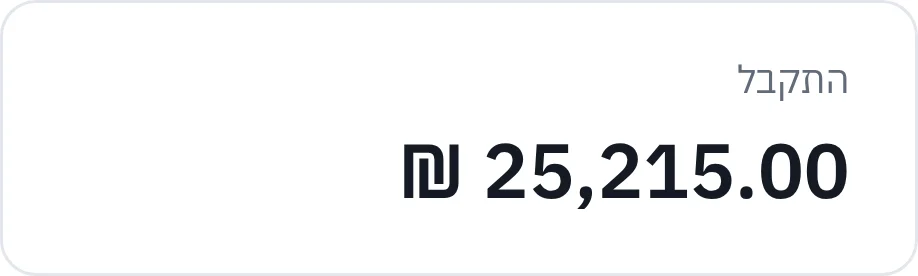
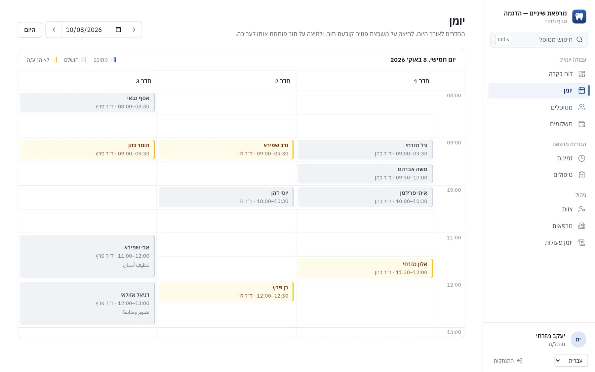
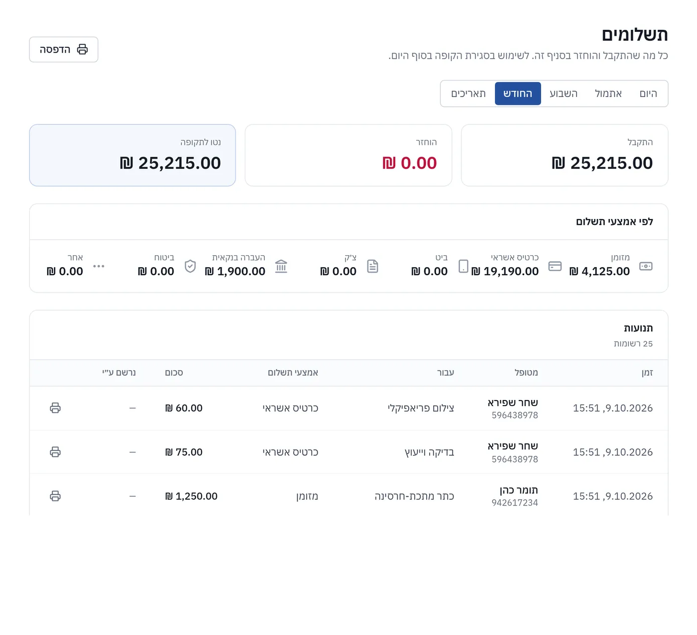
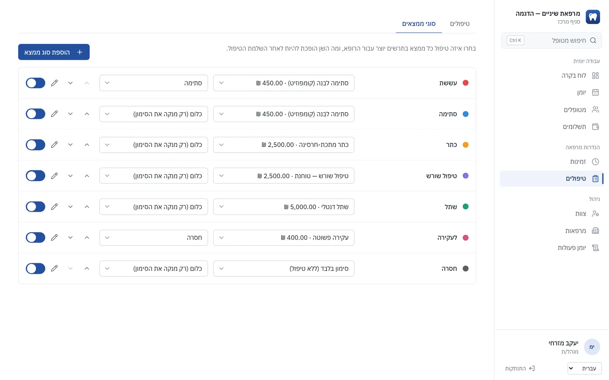

כל המרפאה, מתרשים השיניים.
ClinicLine היא תוכנה למרפאות שיניים: יומן, תיקי מטופלים, תוכניות טיפול ותשלומים במקום אחד, בעברית, בערבית ובאנגלית.


שלוש שפות
עברית, ערבית ואנגלית, מימין לשמאל איפה שצריך.
מערכת פרטית לכל מרפאה
מסד נתונים משלה, שלא משותף עם אף אחד.
גיבוי כל לילה
עותקים שנשמרים הרחק מהשרת.
עובד בדפדפן
אין מה להתקין במחשבי המרפאה.
מה היא עושה
כל מה שהקבלה, הרופאים והבעלים נוגעים בו ביום עבודה.
יומן
תצוגת יום לכל רופא ולכל חדר. כפל הזמנות נתפס עוד לפני שקרה.
תיקי מטופלים
פרטי קשר, היסטוריה רפואית, אלרגיות, תורים והערות. מוצאים כל מטופל לפי תעודת זהות או שם.
תרשים שיניים
לוחצים על שן ורושמים ממצא. הטיפול נכנס לתוכנית, וסיומו מעדכן את התרשים.
תוכניות טיפול
הטיפולים באים ממחירון המרפאה שלכם ועוברים מ'מוצע' ל'הושלם'.
תשלומים ויתרה
מקבלים מזומן, כרטיס אשראי, העברה בנקאית, צ'ק או ביט. שומרים יתרת זכות לכל מטופל ורואים מי חייב כמה.
צילומים
שומרים צילומי רנטגן ותמונות בתיק כל מטופל, גלויים לרופאים ולמנהלים בלבד.
כמה סניפים
חשבון אחד לכל הסניפים. המטופלים משותפים, והצוות משויך לסניפים שבהם הוא עובד.
שלוש שפות
עברית, ערבית ואנגלית. עברית וערבית מוצגות מימין לשמאל.
ככה זה נראה
מסכים אמיתיים מ-ClinicLine, עם נתוני הדגמה בדויים.



כל אחד רואה מה שהתפקיד שלו דורש
רופאים
היומן שלהם, תרשימי המטופלים, תוכניות הטיפול והצילומים.
קבלה
יומן היום כולו, קליטת מטופלים ותשלומים. ללא גישה לצילומים.
מנהלים
צוות, סניפים, מחירון, הגדרות התרשים והרשאות.
המידע על המטופלים נשאר שלכם
תיק מטופל הוא פרטי. כך ClinicLine מתייחסת אליו.
מערכת משלכם
כל מרפאה פועלת בנפרד, עם מסד נתונים משלה. שום דבר לא משותף עם מרפאות אחרות.
חיבור מוצפן
כל התקשורת עוברת ב-HTTPS.
גיבוי כל לילה
הגיבויים נשמרים הרחק מהשרת, ובדקנו שאפשר לשחזר מהם.
הגישה נרשמת
אפשר לראות מי פתח או שינה תיק מטופל, ומתי.
כניסה זהירה
סיסמה חדשה חייבת להתחלף בכניסה הראשונה, ניחושים שגויים חוזרים נועלים את החשבון, ואפשר להפעיל אימות דו-שלבי.
לוקחים את המידע איתכם
מבקשים בכל עת ואנחנו מוסרים ייצוא מלא: תיקי מטופלים, טבלאות וצילומים.
איך מתחילים
מספרים לנו על המרפאה
כמה סניפים, מי עובד בהם, ובאילו שפות הצוות משתמש.
אנחנו מקימים
המחירון, חשבונות הצוות ושם המרפאה שלכם, במערכת נפרדת.
הצוות נכנס
כל אחד מחליף סיסמה זמנית בכניסה הראשונה, ואתם עובדים.
קודם רואים עם נתונים לדוגמה
מבקשים הדגמה ואנחנו שולחים קישור פרטי למרפאה לדוגמה, מלאה במטופלים בדויים, שאפשר ללחוץ בה בקצב שלכם.
שאלות
צריך להתקין משהו?
לא. המערכת פועלת בדפדפן, בכל מחשב, טאבלט או טלפון.
איפה המידע נשמר?
במסד הנתונים הנפרד של המרפאה שלכם, על שרת שאנחנו מנהלים. את אזור האחסון נקבע יחד איתכם.
אפשר לקחת את המידע אם עוזבים?
כן. אנחנו מייצאים תיקי מטופלים, טבלאות וצילומים בכל עת שתבקשו.
אפשר להשתמש בכמה סניפים?
כן. הסניפים חולקים רשימת מטופלים אחת, וכל איש צוות משויך לסניפים שבהם הוא עובד.
באילו שפות המערכת זמינה?
עברית, ערבית ואנגלית. אפשר לקבוע שפה אחת לכל המרפאה, או לתת לצוות לבחור.
כמה זה עולה?
זה תלוי במספר הסניפים והעובדים. שלחו לנו הודעה ונחזור עם הצעת מחיר.
ספרו לנו על המרפאה
כתבו כמה שורות ונחזור אליכם, בדרך כלל תוך יום עבודה.